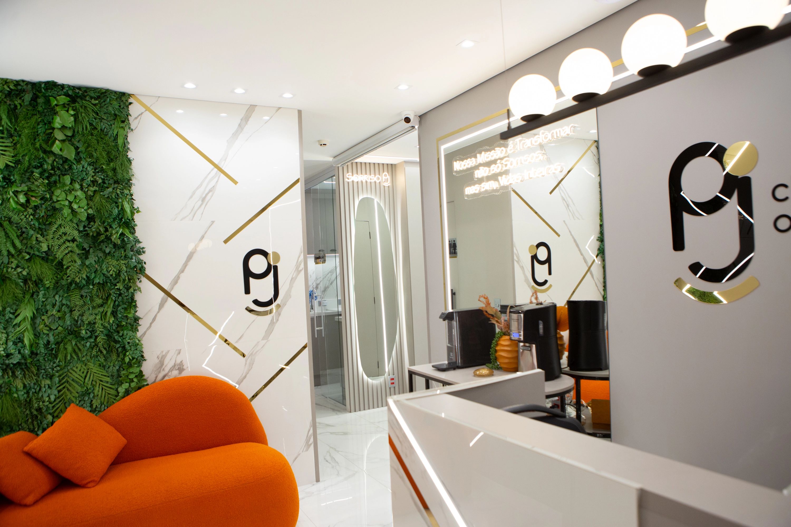

Estratégia de SEO Local e GEO para você aparecer no Google e ser recomendado pelas inteligências artificiais, sem depender de anúncio pago.


A Mori ajuda negócios locais a serem encontrados no Google e nas inteligências artificiais, com metodologia baseada em dados reais.
Nenhum resultado depende de verba de anúncio. O que é construído continua gerando retorno mesmo se o orçamento pausar.
Não somos generalistas de marketing. SEO Local e GEO são o núcleo de tudo que fazemos.
Nada de métrica de vaidade. Relatórios mensais com posições, ligações e visitas de verdade.
Sem SDR, sem hierarquia de agência grande. Você fala direto com quem executa a estratégia.
Estratégia completa de busca orgânica local: técnica, conteúdo e autoridade, o serviço âncora da Mori.
Otimização de conteúdo para que ferramentas como ChatGPT, Gemini e Perplexity encontrem e citem a marca nas respostas.
Gestão completa da presença no Google: perfil, postagens e monitoramento contínuo.
Sites institucionais e páginas de captação com arquitetura pensada pra performance e SEO técnico.
Captação e resposta a avaliações pra manter a nota alta e reforçar confiança na hora da decisão.
A busca orgânica gera 44,5% de leads qualificados, a maior taxa entre todos os canais, à frente de Google Ads, Meta Ads e LinkedIn Ads. A busca por inteligência artificial vem em segundo lugar, com 40,2%.
A maior parte dos consumidores pesquisa no Google antes de contratar qualquer serviço local.
Só falta escolher com quem, e quem aparece primeiro leva a maior parte dessas decisões.
As primeiras posições recebem muito mais ligações, cliques e pedidos de rota que as demais.
Sem depender de orçamento de anúncio recorrente pra continuar aparecendo.
Mesmo empresas menores, quando bem posicionadas, saem na frente de marcas maiores.
Quatro pilares que guiam todo projeto de SEO Local que executamos.
Diagnóstico completo da presença atual no Google, dos concorrentes e das oportunidades reais de crescimento na região.
Site, perfil do Google e conteúdo local alinhados com o que o Google prioriza.
Link building local, citações e conteúdo que constrói autoridade na região.
Relatórios mensais com dados reais: posições, ligações e estratégia ajustada continuamente.
Descrição curta da etapa.
Descrição curta da etapa.
Descrição curta da etapa.
Descrição curta da etapa.
| Critério | Agência comum | Mori |
|---|---|---|
| Onde te posiciona | ✕Só no Google | ✓Google e IAs de busca (GEO) |
| Especialização | ✕Marketing digital genérico | ✓SEO Local como núcleo, não um item de lista |
| Relatório | ✕Relatório de posição | ✓Dados reais de clique, ligação e impressão |
| Metodologia | ✕Lista genérica de tarefas | ✓Processo estruturado e documentado |
| Site | ✕Terceirizado ou parado | ✓Criação de site inclusa, já otimizada |

O trabalho de vocês trouxe mais visibilidade, mais alcance, mais posicionamento e, principalmente, resultados reais. Em pouco tempo já foi possível perceber o crescimento, o aumento na procura pelos serviços e um impacto direto nas vendas. É nítido quando se trabalha com profissionais que realmente entendem do mercado e sabem exatamente o que estão fazendo.
Profissionais incríveis, trabalho realizado e entregue com excelência. Minha empresa hoje está no topo do Google e sendo citada nas IAs. Em menos de 2 meses já comecei a captar leads.
Atendimento excelente, com muito conhecimento técnico. Agência séria, que passa muita confiança e gera resultados de verdade.
Negócios locais costumam investir pesado em anúncio e redes sociais, e seguem invisíveis no momento mais importante: quando o cliente já decidiu comprar e está procurando no Google.
A Mori resolve isso com metodologia baseada em dados reais, execução consistente e transparência total sobre cada resultado gerado.
Ser referência em SEO Local para negócios que querem crescer de forma previsível.
Atendimento em São Paulo e em todo o Brasil, com reuniões presenciais em São Paulo quando fizer sentido para o projeto.